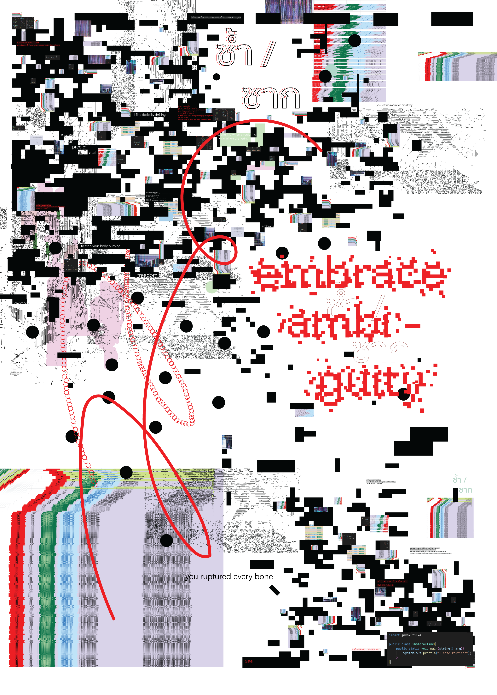
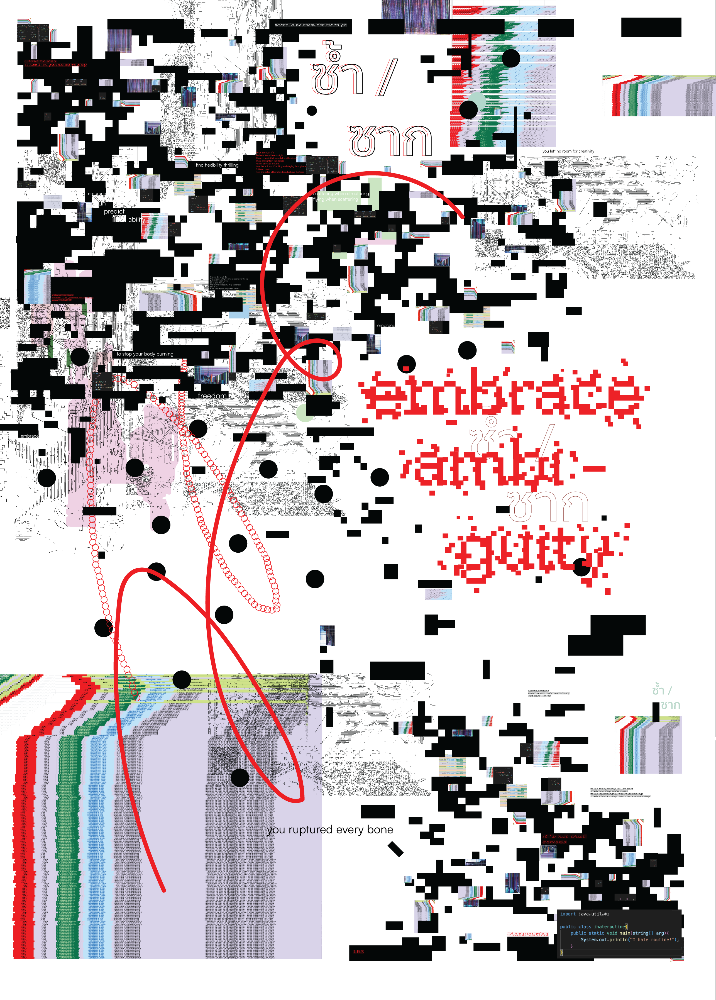
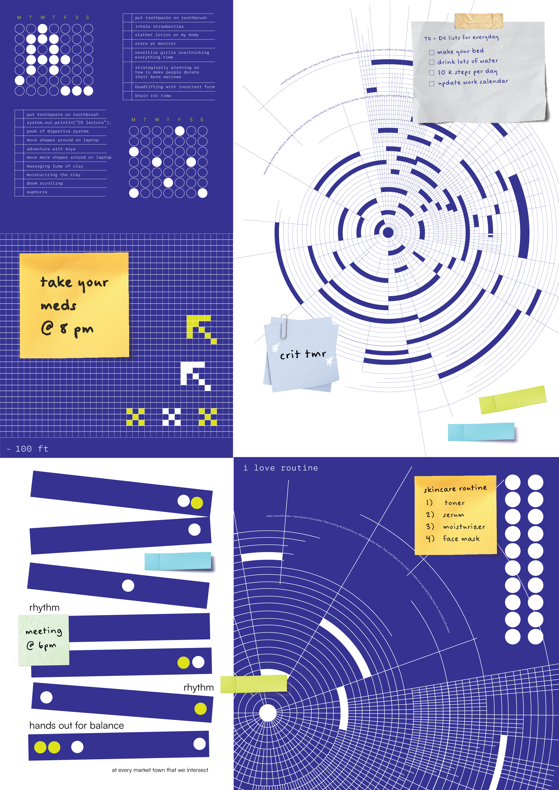
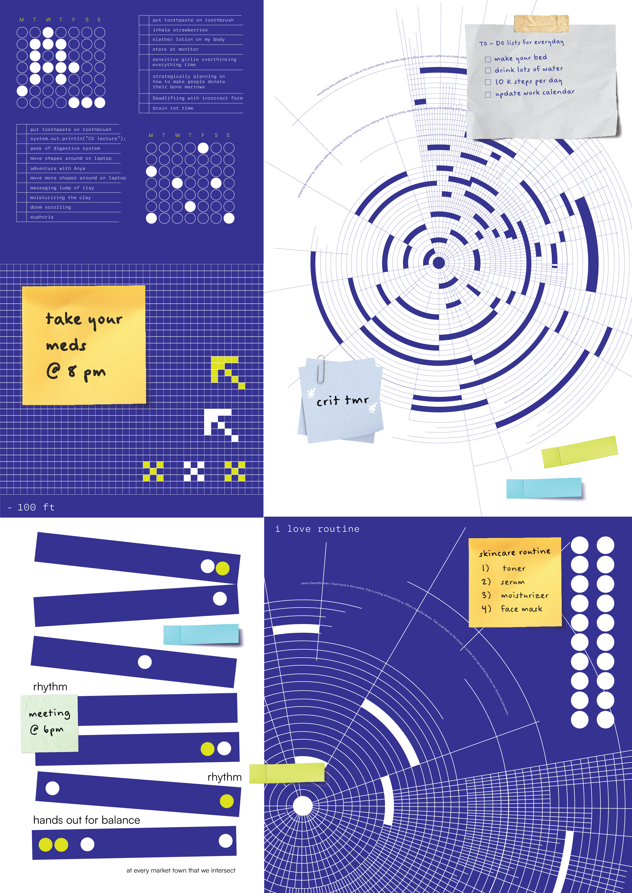

I love routine / I hate routine
I love routine and I hate routine is a poster series created under constraint-based design. Each poster was made using a unique set of five rules that I was required to follow. As the title suggests, the poster reflects the duality of routine. One highlights the structure, predictable, and comforting nature and the other captures its frustrating and repetitive side.
 

 
